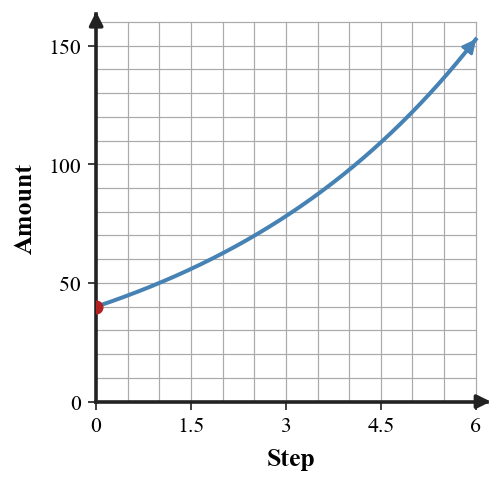

Writing Exponential Equations
Mathematical idea: An exponential equation records where a pattern starts and what factor it multiplies by each step.
Today you will write equations from equations, tables, percent-change contexts, and partial data. You will use the structure $y=ab^x$ to make predictions and explain what each parameter means.
Learning Target
Learning Target: Students will write exponential equations from tables, graphs, and situations.
I can statements
- I can build exponential equations using an initial value and a growth or decay factor.
- I can use exponential equations to predict values from tables, graphs, and situations.
- I can formulate exponential equations that represent repeated percent increase or decrease.
What's To Come
This is a long-range preview for future lessons. Do not solve it today. Instead, annotate it individually. Circle anything familiar, underline symbols or directions that seem important, and write notes about what information you think will be needed later.
As you annotate, ask yourself: What parts (words, symbols, graphs) do you KNOW? What parts look FAMILIAR? What parts look like jibberish?
Design a short context that can be modeled by $y=64(0.75)^x$.
- State what x and y represent.
- Create a four-row table.
- Ask and answer one prediction question from your model.
Intro
Directions
Read the introduction aloud with a partner or in a small group. As you read, annotate the text by highlighting important ideas, circling key vocabulary, and writing short notes about connections, questions, or predictions in the margins.
An exponential equation has a starting amount and a repeated multiplier. In the form $y=ab^x$, $a$ is the output when $x=0$ and $b$ is the factor applied for each step of 1.
Percent change language can be converted into a multiplier before writing the equation. Increase by 8% becomes 1.08, while decrease by 8% becomes 0.92, so the percent tells how to build $b$.
A table with missing rows can still contain enough structure to reason with. If the input changes by more than 1, the total output ratio can be split evenly across those steps to find the single-step multiplier.
Graphs and tables help check whether the equation makes sense. The y-intercept should match the initial value, and the outputs should multiply by the same factor as $x$ increases by 1.
When you predict with an exponential model, you are assuming the same multiplier keeps happening. In context, you should always ask whether that assumption is reasonable for the situation.
Stop and Discuss
- What do $a$ and $b$ represent in $y=ab^x$?
- How do you write a percent increase or decrease as a multiplier?
- Why can two points sometimes be enough to recover an exponential equation?
To write an exponential equation, identify the output at $x=0$ and the constant ratio between outputs.
| $x$ | 0 | 1 | 2 | 3 |
|---|---|---|---|---|
| $y$ | 40 | 50 | 62.5 | 78.125 |
| Ratio | 1.25 | 1.25 | 1.25 |
The equation is $y=40(1.25)^x$ because 40 is the starting value and 1.25 is the multiplier.

Context: If $x$ is years, then $y=40(1.25)^x$ means the quantity starts at 40 and grows by 25% per year.
Example 1: Identify Equation Parameters
Each equation is written in exponential form. Identify the initial value and multiplier.
| Equation | Initial value | Multiplier | Growth/decay |
|---|---|---|---|
| $f(x)=9(2)^x$ | |||
| $g(x)=80(0.6)^x$ | |||
| $h(x)=25(1.12)^x$ |
- Complete the table.
- Decide whether each equation represents growth or decay.
- Choose one equation and explain what the multiplier means.
You Try It 1: Identify More Parameters
Complete the table for each equation.
| Equation | Initial value | Multiplier | Growth/decay |
|---|---|---|---|
| $p(x)=6(4)^x$ | |||
| $q(x)=150(0.8)^x$ | |||
| $r(x)=40(1.05)^x$ |
- Identify the initial value and multiplier.
- Decide whether each equation represents growth or decay.
- Explain one multiplier in context.
Stop and Discuss
- How did the starting value and multiplier appear in both problems?
- Where could a percent or multi-step input cause a mistake?
Example 2: Write Equations from Tables
Each table gives outputs at equal input steps. Write an exponential equation in the form $y=ab^x$.
| $x$ | 0 | 1 | 2 | 3 |
|---|---|---|---|---|
| Table A | 3 | 12 | 48 | 192 |
| Table B | 10 | 15 | 22.5 | 33.75 |
- Find the initial value in each table.
- Find the constant multiplier in each table.
- Write one equation for Table A and one equation for Table B.
You Try It 2: Write Equations from New Tables
Use each table to write an exponential equation in the form $y=ab^x$.
| $x$ | 0 | 1 | 2 | 3 |
|---|---|---|---|---|
| Table A | 7 | 14 | 28 | 56 |
| Table B | 50 | 40 | 32 | 25.6 |
- Find the initial value in each table.
- Find the constant multiplier in each table.
- Write one equation for Table A and one equation for Table B.
Stop and Discuss
- How did the starting value and multiplier appear in both problems?
- Where could a percent or multi-step input cause a mistake?
Convert percent change before writing the equation.
- A 12% increase uses $1+0.12=1.12$.
- An 18% decrease uses $1-0.18=0.82$.
- The model uses the multiplier repeatedly: $A(t)=a(1+r)^t$ or $A(t)=a(1-r)^t$.
For example, a 300-dollar item losing 12% per year has $C(t)=300(0.88)^t$.

Context: $C(4)$ would mean the predicted cost after 4 years.
Example 3: Model Percent Decay
A tablet costs 300 dollars now and loses 12% of its value each year.
- Write the multiplier.
- Write an equation for the value after $t$ years.
- Use the equation to predict the value after 4 years.
You Try It 3: Model Percent Growth
A savings account starts with 500 dollars and grows by 6% each year.
- Write the multiplier.
- Write an equation for the amount after $t$ years.
- Use the equation to predict the amount after 5 years.
Stop and Discuss
- How did the starting value and multiplier appear in both problems?
- Where could a percent or multi-step input cause a mistake?
Example 4: Recover a Multiplier from Two Points
Only two points from an exponential table are visible: $(0,24)$ and $(3,81)$.
- Explain why the starting value is 24.
- Find the one-step multiplier without guessing the missing rows.
- Write an exponential equation for the table.
You Try It 4: Use Two Points Again
Only two points from an exponential table are visible: $(0,50)$ and $(4,320)$.
- Explain why the starting value is 50.
- Find the one-step multiplier without guessing the missing rows.
- Write an approximate exponential equation for the table.
Stop and Discuss
- How did the starting value and multiplier appear in both problems?
- Where could a percent or multi-step input cause a mistake?
Summary
You can write an exponential equation when you know the starting value and the repeated multiplier.
The form $y=ab^x$ shows both parts: $a$ is the value at $x=0$, and $b$ is the growth or decay factor.
A common error is to put the percent itself into the equation instead of converting it to a multiplier.
Strong understanding means you can build a model from a table, graph, or context and explain what the equation predicts.
Common Mistakes
- Using the percent as $b$. Why it is tempting: 5% looks like 5 or 0.05. What to check instead: write 1.05 for increase and 0.95 for decrease.
- Missing the initial value. Why it is tempting: the first visible row may not be $x=0$. What to check instead: check which input gives the starting value.
- Adding instead of multiplying. Why it is tempting: tables may look like they just go up. What to check instead: verify ratios between outputs.
- Ignoring multi-step gaps. Why it is tempting: two visible rows may be several steps apart. What to check instead: use roots to find the one-step multiplier.
- Predicting without context. Why it is tempting: the equation gives a number quickly. What to check instead: ask whether repeated change is reasonable.
Optional Future Task Reflection
Look back at the future task. Do not solve it yet. Highlight one part that makes more sense now than it did at the beginning. Circle one part that still feels unfamiliar. Write one sentence about what representation you would look at first.
For each equation, identify the initial value and the multiplier.
| Equation | Initial value | Multiplier |
|---|---|---|
| $f(x)=7(3)^x$ | ||
| $g(x)=120(0.75)^x$ | ||
| $h(x)=42(1.08)^x$ |
For each table, write an exponential equation in the form $y=ab^x$.
| $x$ | 0 | 1 | 2 | 3 |
|---|---|---|---|---|
| Table A | 2 | 8 | 32 | 128 |
| Table B | 5 | 6 | 7.2 | 8.64 |
What is one idea about writing exponential equations you understand better now than at the start of class? Write at least one complete sentence.
What is one thing about writing exponential equations you still want to understand or practice? Be specific — name the idea, not just "everything."